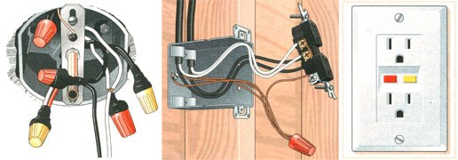
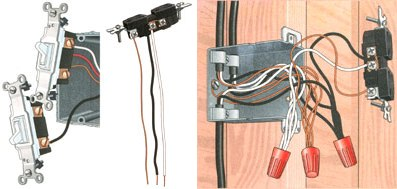
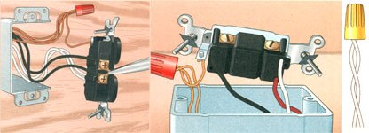
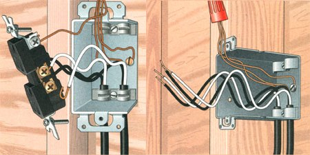
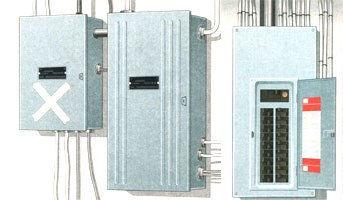

ENERGY AND ENVIRONMENT
If you're like most people, when the weather turns cold, gray, and damp, you turn inward. I'm not talking about transcendentalism; I'm talking about your house. Late fall is the perfect time to consider all the in-home repairs and upgrades you've left on the back burner during the busy growing and harvesting seasons. With this in mind, you decide today is the right day to replace that broken light fixture just inside the back door. You already have the new light (you bought it last year, remember?), and those fix-it-yourself shows on TV make its replacement look like a ten-minute no-brainer. But as you remove the fixture coverplate, the gray fall light does not reveal what you saw on TV; it reveals a tangled mess of perhaps ten or more individual wires connected with as many as four or five wirenuts. Why, there's even some red wires in there! And where's the simple "black wire-to-black wire" and "white wire-to-white wire" scenario you saw in the fixture instructions?
For simplicity's sake, I'll focus my advice on three projects homeowners are likely to attempt: (1) replacing a light switch, (2) replacing a receptacle, and (3) replacing a light fixture. Later, I'll give you some tips on methods that are common to all three of these endeavors, as well as other wiring projects.
To save time, you should have the tools, accessories, and replacement devices on hand before starting the actual work. The basic tools for electrical work include needle-nose pliers, a pair of linesman's pliers, tools that cut and strip wire, a utility knife, various screwdrivers, and a test light or multimeter. Some typical accessories include things like wirenuts of different sizes, electrical tape, grounding screws or clips, and short pieces of copper wire for making ground connections. As for the devices, that's where I start giving you some of that advice I promised. To select the proper light switch, first determine if it works alone or in conjunction with another switch or switches to control the light. If it works alone, it's a simple, single-pole switch. If you can operate the light from two locations, the switch (or switches, if you replace both of them) you'll need is a three-way switch. Don't let the term "three-way" confuse you; it refers to the way the switch itself works, not to the number required to do the job. A light that can be controlled from more than two locations uses two three-way switches, plus a four-way switch for each additional location. In this instance, the only way to determine whether the switch is a three-way or fourway switch is to remove the switch's coverplate and see how many wires connect to it. A three-way has three connected wires and a four-way has four (excluding any ground wire). How many switches should you buy? The answer in the first case is obvious, but in the second and third cases it depends on your situation.
In cases involving more than one switch, if you're replacing the switches for cosmetic purposes (such as remodeling), you must buy all of them. But if you want to replace only the defective switch in a multi-switch job, you have two options: swapping a new switch with each suspected one until the light works, or using a multimeter or test light to locate the bad apple in the bunch. If you don't know how to test a switch, then swapping is probably your best bet. All that's left is choosing the color and style of your new switch and - if you make a change in either category - buying a new coverplate. Color and style will also play a part in choosing a new receptacle, but location will be the most important factor.
The National Electric Code now requires the use of Ground Fault Circuit Interrupters (GFCIs) in many areas of your home. These areas include bathrooms, kitchen counters within six feet of a sink, cellars, garages, and all outdoor locations. A GFCI is a "smart" receptacle: it can detect an electrical "leak" (possibly through you to the ground) and shut itself off in a fraction of a second. Any other receptacles you buy must be the three-pronged, grounded type.
As for light fixtures, be sure to choose one with the same or lesser wattage as the one you're replacing, unless you are aware of the load connected on the circuit. Also, don't forget about the unit's capacity (will it provide enough light?) and its weight. A heavy chandelier should be hung from a steel box directly attached to a wood framing member, and, to satisfy most building codes, a fan-light combination needs to be hung from a special steel fan box that uses lock nuts. So if you buy something along those lines and your old box doesn't measure up, be prepared to use the old hammer and saw.
Once you have the proper tools and replacements, you're ready for the most important part of the job - shutting off the power. If you end up working on 120-volt outlets, switches, receptacles, etc., that have not been turned off, you risk a severe shock. If you are working on wiring for 240-volt outlets (dryer outlets, range outlets, etc.) and you haven't properly killed the juice, the juice can kill you. Thanks to incomplete or nonexistent circuit labeling, "killing the juice" can be an adventure in most houses. And you can't use a defective fixture as a reference because it doesn't work with the power on or off. You need intimate knowledge of your home circuitry to kill only the circuit involved in the repair. Two or more switches grouped in one box are particularly dangerous; one may control lights for a floor or room beyond where the switch is located (like a stairway or garage), and remain "hot" (carrying a voltage greater than 0) even when that room's power is off. Also, be on the lookout for "sub-feed" boxes - found in your cellar or other out-of-the-way places - that could be feeding some rooms of your home. These boxes get power from one cable out of the main distribution box and then split it, by way of fuses or circuit breakers, into several smaller circuits. Years ago, they were a cheap and convenient way for electricians to satisfy homeowners' needs for more power. They typically feed some of the last circuits installed in your home. If you flip a branch circuit breaker off, or unscrew a branch circuit fuse, working lights on the circuit should go off, or the test light attached to the receptacle should go off. But even after imparting all that wisdom, I'm going to finish with this recommendation: when in doubt, go to the main distribution panel (fuse box, circuit breaker box), and either pull the main fuse or shut off the main breaker to cut power to the entire house. Make sure you have a strong flashlight, and work during daylight hours. Before removing any fixture, double check with a testing device to be sure the circuit is dead.
Also, before you go grabbing your tools, I would like to clear up any confusion concerning cables and wires. A wire is a singular entity; a cable is made up of two or more wires wrapped within a common covering or jacket. By slitting the jacket of a cable, you can reveal the individual wires inside. In common house wiring, the wires are categorized as hot, neutral, and ground wires. Hot wires, which carry 120 volts to the work to be done, are always black or red with the following common exception: a white wire with its ends taped or painted black is also hot. Neutral wires, which carry power back to the distribution box after it has done its work, are colored white. Ground wires can be bare or they, can have green insulation. Their job is to safely channel any power back to the earth that has "leaked" onto metal components in the electrical circuit, thereby reducing shock hazards.
Now that your brain and your tool belt are overflowing, let's start with the replacement of a single-pole switch. Make sure your circuit is dead, then remove the coverplate and switch retaining screws. Gently pull the switch out of the box. You may see many more wires in the box than you expected. That's because boxes aren't just used to house things like .switches; they're also used as junctions to connect cables going to different places. In a typical box, you might find one cable bringing in the power, another cable exiting to the light fixture, and still another carrying the power on to the next switch or receptacle. With an average of three wires (hot, neutral, and ground) in each cable, it can get a little crowded in there. But don't be alarmed about how many wires you see; just focus on the ones that connect directly to the switch.
A single-pole switch has two side terminal screws (usually brass or silver) and it may or may not have a green ground terminal screw. Take the two hot wires off of the old switch and put them on the new one's brass or silver terminals - either wire on either terminal - it doesn't matter. The ground wire in the box, which is bare copper or green, attaches to the green terminal of the switch. (If no ground wire or grounding terminal is available and for more tips on grounding, see "Get Grounded," page SG). Be sure to install the switch with "OFF" in the down position.
The replacement of a three-way switch, as one of a pair controlling a light from two locations, is done in the same fashion up to the attachment of the hot wires. Notice that the three-way has one black- or copper-colored terminal and two brass- or silver-colored terminals with a combination of black, red, or white wires connected to them. Remove one wire at a time from the old switch and connect it to the corresponding terminal on the new switch for a foolproof job. Also, connect the ground wire to the switch's green terminal screw. There is no "ON" or "OFF" on a three-way switch, so it can't be installed upside down.
The replacement of a four-way switch, used in conjunction with two three-way switches to afford control from three locations, is done in the same manner. A four-way has four side terminals - sometimes all one color, or sometimes one pair is colored differently than the other. There should be two separate cables entering this switch box, with two wires from one cable forming a pair that attaches to one set of terminals and two wires from the other making a second pair to connect to the remaining two terminals.
After careful study of the old switch and the instructions for the new one (three- and four-way switches almost always include their own wiring diagrams), transfer one wire at a time from the old switch to the new. Don't forget the ground wire. Finish all of your jobs by reinstalling the switch and coverplate and restoring the power. Have you had enough of the real world No? Then read on for some straight dope on receptacles.
It seems like there are never receptacles where you really need them. The National Electric Code stipulates that no point along a wall can be more than six feet from a receptacle ("plug," "outlet"), and that's just the beginning. Kitchen counters, short wall spaces divided by door openings, and other circumstances can quickly escalate the number required in a job that satisfies codes. So imagine my sympathy for someone like you, perhaps living in a house erected before electricity-never mind codes-who has just lost the use of one of those sacred springs of power. Old houses that were wired "after the fact" can get on your nerves when a receptacle can't accept a polarized plug or just plain doesn't work. Even in modern houses-houses wired to the teeth--the loss of one strategic outlet can leave you fumbling over extension cords and grumbling to yourself. Fortunately, replacing those old receptacles is as easy as replacing a switch. Just follow my previous guidelines for selecting a replacement and cutting the power, and you're ready to get dirty.
After removing the coverplate screw and then the attachment screws, gently pull the receptacle from its box. Then, you'll probably see one of these three scenarios: (1) one cable with its wires attached directly to the receptacle, (2) two cables with wires from both attached directly to the receptacle, or (3) three cables whose wires are wirenutted to a "pigtail" set of wires that are connected to the receptacle. The first case is an example of the end of a circuit or a dead-end run. The second, which is the most common, is an outlet in the middle of a circuit, with one cable bringing power in and the other cable taking power out to the next box. The third is an example of the box being used as a junction site, with one cable bringing power in and the other two taking power out in two different directions.
To wire regular receptacles, disconnect the hot wire(s) - colored black or red - and attach it (them) to the brass-colored terminal(s) of your new device. Now disconnect the neutral wire(s) - colored white - and attach it (them) to the silver-colored terminal(s). Finally, disconnect and then attach the ground wire (bare copper or green) to the green-colored terminal of the new receptacle. (If no ground wire is present, see "Get Grounded," page 56). You'll notice that receptacles have two terminals each for hot and neutral wires. Those extra terminals make it possible for the device to act as a "splice" between the incoming power cable and the outgoing one (the most popular scenario - number 2 - above). But only one wire may be connected to each terminal screw; hence, the use of short "pigtail" splices joined by wirenuts when three cables are present (scenario 3). This method is also often used to connect several ground wires to the one ground terminal available. You simply wirenut two or more wires together with a short piece of jumper wire - scavenged from a scrap piece of cable - to form the pigtail, then attach the pigtail wire to the terminal.
The extra terminals on the receptacle have another function: to provide a means for separating the top plug outlet from the bottom. Often used in living rooms and bedrooms, this arrangement makes half of the receptacle hot all of the time (for radios, televisions, etc.), and puts the other half under the control of a wall switch for lamps. If you encounter a job like this, transfer one wire at a time from the old receptacle to the new one - hot wires to the brass terminals, neutral wires to the silver ones, and ground wires to the green one. This wiring technique requires two distinct hot wires on the receptacle. To keep these hot wires separated, locate the copper fin that connects the two brass terminal plates and break it off. Break the silver connecting fin on the neutral side only if it was removed from the old receptacle.
So far, we've been dealing with regular grounding receptacles; now let's talk about ground fault circuit interrupters. GFCIs, as I told you earlier, are "smart" receptacles capable of protecting you from electric shock in hazardous (damp) locations. What I didn't tell you is that they can also pass their protection on to other receptacles on the same circuit. However, both because of this feature and to preserve this feature, you have to ascertain which of the receptacles that you want to protect is first on the circuit and, when you find that box, which cable is bringing power in and which is taking power out to the next location. If you are not skilled in the use of a test light or multimeter, I recommend you leave this job to a pro. Installing a GFCI to protect only its immediate location, however, is a little easier. Follow the previous instructions to get the old receptacle pulled away from its box. Notice the GFCI has two brass terminals, two silver terminals, and one green terminal, just like the regular receptacle. The GFCI, however, labels one brass and one silver terminal combination as the "LINE" terminals, and the remaining brass and silver combination as the "LOAD" terminals.
To protect in one location only: if one cable enters the box, connect the hot and neutral wires to the "LINE" terminals only. If more than one cable enters the box, use the pigtail method mentioned earlier to connect the hot and neutral wires to the "LINE" terminals only. For pass-through protection to other outlets: after confirming you are working in the first box of the group to be protected, connect the wires from the incoming power cable to the "LINE" terminals, and the wires from the outgoing power cable to the "LOAD" terminals. In all cases, the ground wire is attached to the green terminal. (Use the pigtail method, if needed.)
After crouching by all of those receptacles, you're probably ready for a good stretch. And while I've got you looking up, I'll start telling you how to "get down" with light fixtures. As I told you earlier, choose your replacements with care and foresight in regard to lighting capacity, style, and weight. Because there are several popular methods of hanging fixtures, you'll find your mechanical skills just as important as electrical know-how when replacing a light. The new fixture should come with the proper hardware and mounting instructions right in the box. Any snags you hit in actually hanging the fixture can easily be solved with a trip to a well-stocked hardware store. After killing the power, remove the attaching hardware and lower the fixture to reveal the wiring. You may find myriad wires in the box, but focus on the ones connected to the fixture. The fixture's wires are usually connected to the house wiring with wirenuts. Unscrew one wirenut at a time, swap the new fixture's wire for the old one's wire, and screw the wirenut back on. Always connect hot-to-hot (black, red, white painted black), neutral-to-neutral (white), and ground-to-ground (bare or green). Also, your specific instructions may label "style-colored" wires as hot, neutral, or ground. Follow those instructions, as well as any for grounding the light, to the letter. The fixture may include its own wirenuts, but they may not be appropriate for every job, especially if several house wires are joined to the light's wires. Reuse the old nut if it looks good, or even better, replace it with a new one of equal size.
Here are some additional tips on wiring methods that I feel are important. There's no better place to begin than where I ended: with wirenuts. Because wirenuts come in many sizes, choosing the best one can be difficult. Just remember that a wirenut should screw on its wires like a pipe screws into its fitting: starting freely and ending tightly. If it starts hard or doesn't tighten up, select the next size up or down, respectively, and try again. Most brands say no pre-twisting of the wires is necessary, and all say no bare wire should be left exposed after the nut is applied. If any is left showing, the wires must be trimmed and the wirenut reapplied. When fastening stranded wire to solid wire (as in most light fixture jobs), lead the stranded wire into the wirenut a little ahead of the solid wire. Always twist the wirenut clockwise until tight, then tug on the wires to be sure they are secure. Finish by wrapping the wirenut and the wires together with electrical tape, also in a clockwise direction.
Next, you need to be adept at connecting wires to terminal screws. Make sure about 3/4" of insulation is stripped off the wire. Use needle-nose pliers to form a "hook" in the bare wire, then slip the hook under the terminal screw in a clockwise direction. When you tighten the screw (also clockwise), the hook will tend to close a little, making it even more secure. Of course, many switches and receptacles are now made so you can simply "plug" a straight piece of stripped wire right into the back of the terminal without forming a hook or using the screw. Use the handy strip gauge, which is found on the back of the device, to determine how much insulation to remove. Then just strip the wire and plug it in. Be sure to screw in any unused terminal screws on the device so they don't stick out and touch something they shouldn't - like you.
And now we're ready to pack it in - the wires, that is. No one talks about this, but getting all those wires back into a box safely can be a challenge. One technique I've found helpful is to pre-bend the wires into an "S" shape before attaching them. The wires will fold up easily and neatly, like the folds of an accordion bellows. And perhaps this would be a good way to close, talking about something that is "easy" and "neat," because as I (and now you) know all too well, that's not always the way it is in the real world.
"I don't know why these 'codes' guys are always fussin' over everybody having everything grounded. Why, the next thing you know, they'll be making us hang big copper wires from the sky in our backyards, just so lightning won't come down and kill us." - Anonymous old geezer, shortly before he was electrocuted by an ungrounded pump that he used to fill his jugs with corn squeezings. I'm using humor solely to gain your attention, because the topic of grounding is no joke. If you don't see aground wire in your fixture's box, you have one chance left with the power on, see if a test light comes on when you touch one probe on a hot wire and the other probe on the metal fixture box. If it lights, the wires on that circuit maybe in metal conduit or flexible steel (called armored cable), and the jacket of metal is acting as aground wire. Although they may not be considered as good as a continuous copper ground wire, armored cable and metal conduit are accepted by most codes as a means of grounding. If the test light doesn't come on, you're probably dealing with an old, ungrounded system.
Some "experts" say you can drop a ground wire out of the box and connect it to the nearest cold water pipe to ground just that box, but I wouldn't do it. If you're going to go to that much trouble, consider installing a new, grounded cable from the distribution box to the circuit involved. To ground in metal boxes, connect a short (6") piece of ground wire to the box with a ground screw or, if there is no tapped hole, a grounding clip. Always make these "pigtails" with wire of the same gauge as the circuit wires entering the box - usually #12 or #14. Check the device to be installed. Some, like many light fixtures, already have a ground wire protruding. Others, like switches and receptacles, need another short ground wire attached to their green ground terminal screw. Now connect the box's ground wire and the device's ground wire to all other ground wires entering the box (as part of a cable) by using a wirenut. (For armored cable or metal conduit boxes that have no separate ground wires, just wirenut the box's ground wire to the device's ground wire.) When working in newer, plastic boxes, no ground wire is connected to the box, but all other ground wires that I mentioned have to be installed and wirenutted together. For a circuit that ends in a plastic box, the lone ground wire from the cable can be attached directly to the device's ground terminal or wire. And what about light switches? Some switches are sold with ground terminals and some without them. Although some local codes may allow switches without a ground terminal, and there may be cases that don't require them (like directly attaching a switch to an already-grounded metal box), error on the safe side: always install a grounded switch. Finally, keep in mind that specific grounding instructions included with a device always supersede my general guidelines.
Finding out that your house has an old, ungrounded electrical system isn't the end of the world - it's a wake-up call. Cables made without ground wires are old. Old cables mean old, fraying insulation. And old, fraying, insulation means ...well, you get the picture. You don't have to rewire the entire house at one time, and if local codes permit it, you could do the work yourself. Of course, you'll need to know more than you learned in this small article. But if you can learn a new skill that can bring you both savings and satisfaction, I say go for it, and more power to you.
|
 (ILLUSTRATIONS: THOMAS MOORE) Left: A typical ceiling light box. Many wires are joined here, but for replacement, focus on the wires connected to the light. Middle: a common wiring scenario. Notice how the double terminals on the receptacle function as a splice between the incoming and outgoing hot (black) and neutral (white) wires. With only one ground terminal (top), the receptacle needs a short pigtail ground wire, which is wirenutted to the ground wires of the two cables, plus another pigtail attached to the metal box. On a plastic box, the second pigtail is eliminated. Right: A ground fault circuit interpreter (GFCI), with TEST and RESET buttons. |
 (ILLUSTRATIONS: THOMAS MOORE) Left: Replacing a three-way switch. Locate terminals according to color and/or position, then transfer one wire at a time from the old switch (top) to the new switch (bottom). Middle: A receptacle with hot, neutral, and ground pigtail wires attached. Right: A receptacle attached to three cables with the use of pigtail wires. |
 Left: The needle-nose pliers grasp the copper fin that connets the upper and lower hot terminals of the receptacle. In some cases, the fin between the terminals and the neutral fin must be removed. Middle: a light switch connected by plugging stripped wires directly into designated holes in the back. Right: Use of a wirenut to connect wires. Be sure no bare wire is exposed, tug wires to check, and tape. |
|
 Left: A properly formed terminal end is ready to slip under its screw. After stripping about 3/4"" of insulation off the wire, form the hook with needle-nosed pliers. Place it under the screw, hook going clockwise, and tighten screw. Right: Premade wire-bends allow device to push back into the box easily. |
 Left: The box marked with an ""X"" is a sub-feed fused box,deriving its power from the main entrance box to the right. The sub-feed box can be found far away form the main panel. Right: A modern, precisely labeled main entrance panel. Always check with a test light to make sure the circuit you're working on is dead. |
|